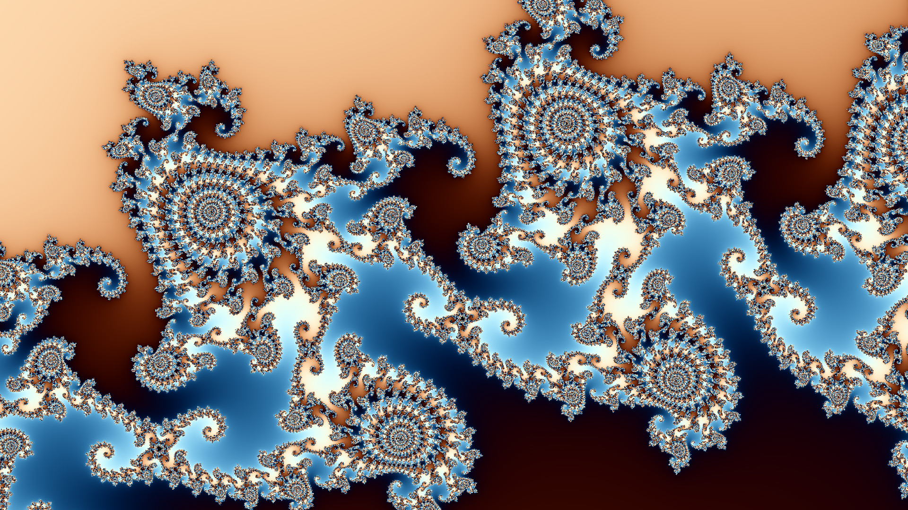
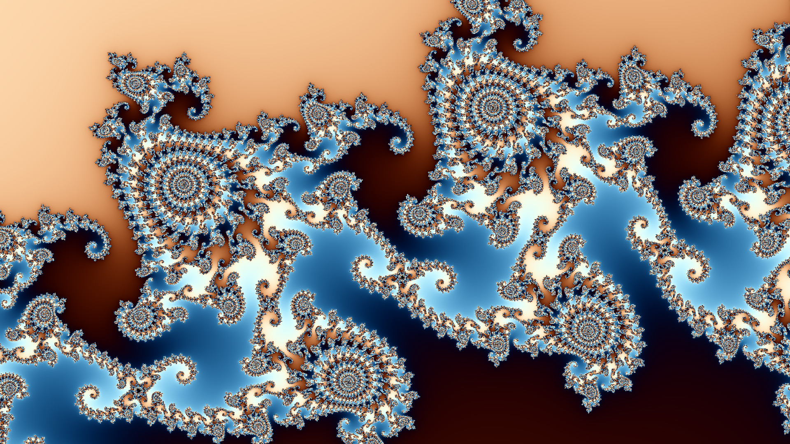

Computing Still Images¶
In this tutorial, you will learn how to create still images using the DeepDrill tool chain.
It is assumed that DeepDrill has been successfully installed on your computer. We start by computing the top view of the entire mandelbrot set. To compute the image, we need to tell DeepDrill the location of the object. This is done by passing a location file (.loc) as a command line parameter. A predefined location file for the cover image is stored in the tutorial directory under top.loc. Before we continue, let’s take a look at the contents of this file:
[location]
real = -0.7
imag = 0.0
zoom = 1.7
depth = 1000
Four key-value pairs are defined. The first two define the position of the center coordinate on the complex number plane. The third pair defines the magnification factor and the fourth pair defines the maximum number of iterations. If an orbit has not yet broken out at the time this iteration is performed, the corresponding point is considered part of the Mandelbrot set.
Assuming that the current directory is the DeepDrill build directory, we can start DeepDrill by executing the following command on the command line:
./deepdrill -o image.map top.loc
The following output is generated:
DeepDrill 2.0b1 - (C)opyright Dirk W. Hoffmann
Round 1 (max 50): 2073600 points
Computing reference orbit: ................................. 0.00 sec
Computing coefficients: ................................. 0.00 sec
Checking probe points: ................................. 0.00 sec
Computing delta orbits: ................................. 6.24 sec
Saving map file: ................................. 0.11 sec
Total time: 6.38 sec
Note that we do not generate the image directly. Instead, we compute a so-called map file, which stores various information about the orbit of each pixel. The creation of the map file is the first phase of a two-step process. In the second phase, the map file is converted into an image. This phase is initiated by specifying a map file as input and an image file as output.
./deepdrill -o image.jpg image.map
The following output is generated:
DeepDrill 2.0b1 - (C)opyright Dirk W. Hoffmann
Loading map file: ................................. 0.09 sec
Computing color map: ................................. 0.05 sec
Running GPU shaders: ................................. 0.01 sec
Saving image: ................................. 0.18 sec
Total time: 0.36 sec
Besides jpg images, DeepDrill also supports bmp and png type images.
By default, DeepDrill creates a 1920 x 1080 image with a predefined color palette and other default settings. For our example, the result looks as follows:
All settings can be customized by specifying one or more key-value pairs. The most straight-forward way to define a key-value pair is by using command line option -c. E.g., the following call instructs DeepDrill to create the imange in 4K resolution:
./deepdrill -o image.jpg image.map -c image.width=3840 -c image.height=2160
As the number of key-value pairs can become very large, DeepDrill allows the user to customize settings via so called profiles. E.g, a predefined profile called ‘4K.prf’ is provided which looks like this:
[image]
width = 3840
height = 2160
Profiles can be specified with the -p option at the command line. This means that we can simplify the computation of our 4K image by executing DeepDrill as follows:
./deepdrill -o top.jpg -p 4K.prf top.loc
This example also demonstrated that it’s possible to switch from a location file directly to an image. In this case the map file is only created internally and not written to disk. Since rendering the map file is by far the most time-consuming part, saving map files to disk is the preferred method if a single map file is to be rendered multiple times, e.g. with different color palettes.
The -p option can be specified multiple times in order to combine different profiles. Note that previously set key-value pairs are overwritten if they are specified multiple times. All profiles are processed in the order in which they are specified in the argument list.
In the next example, we’ll dig a little deeper into the Mandelbrot set by speciying different location files:
./deepdrill -v -o seahorse1.jpg seahorse1.loc
./deepdrill -v -o seahorse2.jpg seahorse2.loc
./deepdrill -v -o seahorse2.jpg seahorse2.loc
After successful completion, the following image will have been computed:
 

All three structures are located in a part of the Mandelbrot set which is often referred to as seahorse valley: